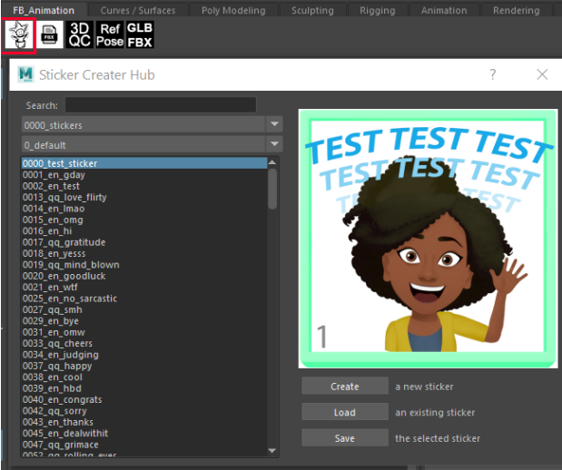
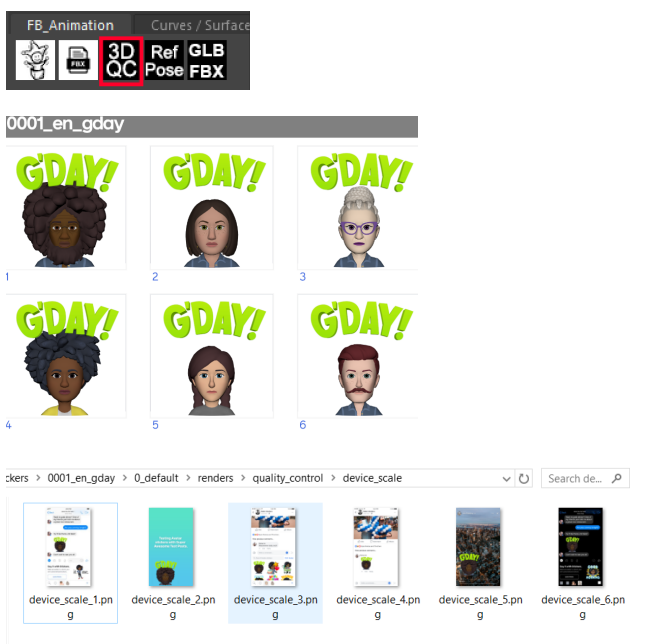
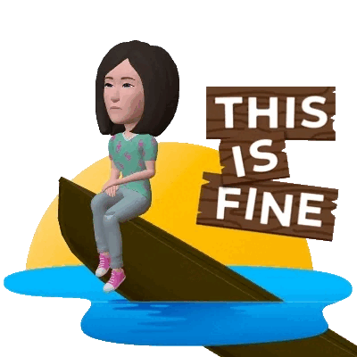

Technical Artist on the Facebook/Meta Avatar sticker team: Collaborated with cross-functional engineering and art teams to create and manage artist pipelines for the 2.5D and 3D Avatar Sticker character products.
• Built and managed the artist/vender pipeline between Maya, Photoshop, Blender, Illustrator, Perforce, Shotgrid, Spark, and the proprietary Facebook render ecosystem.
• Created several new product feature pipelines, including adding profile pics, cover photos, super awesome text posts, and more customizable looks like jewelry, tattoos, and DEI user options.
• Programmed Photoshop menu plugins and templates to automate repetitive designer tasks like the import/export and organization of thousands of assets.
• Coded an automated QA tool that generated a series of test images and compositions for creative review.
• Built and automated the customizable emoji reaction product matching to avatar features.
• Migrated our Maya tools from generic Maya gui boxes to customized, dynamic, polished Python QT windows.
• Created automated Photoshop templates with custom mattes, guides, and layers for our design team and vendors.
• Wrote tool documentation and technical specs for product and tool requests.
• Setup and maintained the Perforce database for our local artists and remote vendors. Migrated our pipeline from Dropbox and Google Drive to Perforce.
• Created and delivered vendor packages. Managed vendor deliveries and organized our asset database.
• Trained artists and vendors on the sticker pipeline, fielded tool requests, and provided daily support.
• Coded tools in Python (PyQT), Javascript, Extendscript, MEL, C#, and HLSL/GLSL.


Link to the original 2D Facebook Avatar Stickers
The success and popularity of our product led the company to focus more resources on building a 3D version that we adapted our pipeline to use.
• Prototyped and engineered shader and lighting solutions to increase mobile render performance.
• Designed and created interactive AR/VR experiences with Facebook’s proprietary real-time tool, Spark.
• Wrote a Maya toolshelf of creation and posing tools for our 3D artists with PyQT.
• Identified and updated tools in our pipeline to the new 3D assets.
• Programmed a Blender pipeline to round trip convert customized glb assets into poseable fbx Maya scenes.
• Worked cross functionally with London-based engineers to increase performance including omitting transparencies, excluding similar pixel rendering, and experimenting with different shader/material libraries.
• Prototyped and collaborated cross-functionally with the 3D Avatar team to create the first working animated sticker product and build a functional, performant 3D animated sticker pipeline.

This is how the stickers looked when left the company to go to Pixar.
Meta updates 3D avatars for Instagram, Facebook, Messenger
Portal AR Team: Technical Artist on the Portal TV (codename "Catalina") AR team, designing and creating AR/VR prototypes with Unity, Spark, C#, and Javascript.
• Prototyped and assisted in the creation of online multiplayer AR Lip Sync experience.
• Created playable prototypes in Unity, using an Xbox connect to simulate the potential AR capabilities of the incomplete Catalina unit.
• Conceptualized and developed Unity UI/UX designs.
• Developed full navigable menu systems, a interactable dressing room with constrained props and the logic and flow of the lip sync experience itself with simulated FX.
• Directed our vendors in the creation of final assets, adapted heavy assets to make them performant, and wrote HLSL shaders to replace textures to further increase performance.
• Worked with the game developers and engineers to code Unity C# game scripts, setup scenes, and wire and animate assets.
• Managed a cross-functional effort with the Facebook Audio team to integrate their beat detection software to drive our effects logic.
• Created, animated, programmed, the cameras, assets, and effects in the final game.
Here is a full playthrough of the final game.
Here's a more in depth description of the design process for the game from the product
designer's perspective.
AR Lip Sync Product Designer page
Leading up to my assignment, I needed to refresh my Unity skills and knowledge, so I created a
game, UI examples, and an animated 3D scene in my free time.